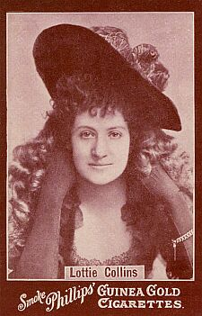
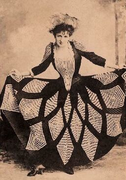

Lottie Collins (1866-1910)
English music hall singer and dancer

|
This cigarette card, with its half-tone portrait of Lottie Collins, was issued in Great Britain in the mid 1890s with Phillips's Guinea Gold Cigarettes. * * * * * * * * Lottie Collins was born into
the theatrical profession in London in 1866. She began as a skipping
rope dancer in 1877 before being joined by her two sisters, Lizzie and
Marie in a music hall act. In 1886 she made her first appearance at the
Gaiety Theatre, London, in the burlesque Monte Cristo Junior
(23 December), with Nellie Farren, Fay Templeton and Fred Leslie in the
principal roles. Afterwards she devoted herself to the variety stage,
and in 1891 she toured the United States. While there she heard the
song 'Ta-ra-ra-boom-de-ay' with which she returned to London and which
will forever be associated with her name. On the strength of her
success with this extraordinary song and dance at the Tivoli Music Hall
(first performed there on 7 November 1891), Miss Collins was engaged
once more for the Gaiety Theatre, appearing in a cameo role in the
burlesque Cinder-Ellen Up to Late. |

|
Lottie Collins '… And can anyone who saw him
forget Hebert Campbell's excursion into the domesticities - Campbell,
reputed to weigh nineteen stone [266 pounds], who was faithful to
elastic-sided boots because stooping to untie laces was out of the
question - when, dressed as a woman, he denounced the bicycling craze
[of the 1890s] and the then "new woman"?…
A smart and stylish girl you see 'A tiny pause. A crash from the orchestra. The mask dropped; the insensate chorus burst forth: Ta-ra-ra-BOOM-deay 'It was a Pavlova's
"Bacchanale" of the [music] halls, ante-dating the Russians by a
generation. One remembers even now the electric thrill which shot
through the audience, as a species of frenzy seemed to possess the
slight figure on the stage, and the tempestuous petticoats swished, and
the scarlet-clad limbs flashed high in the air.' * * * * * * * * |
© John Culme, 2003